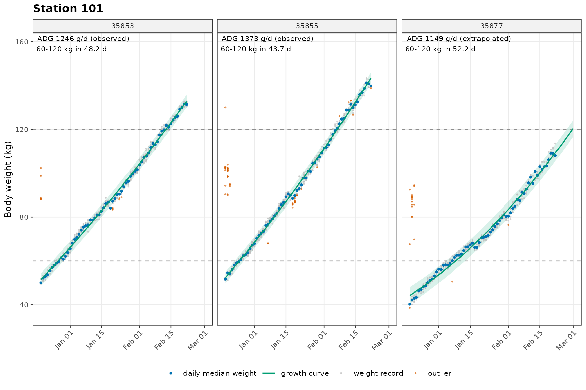
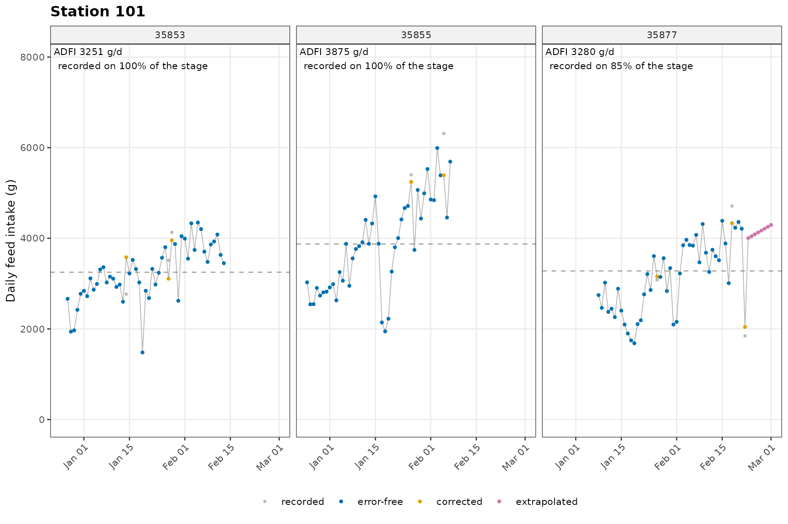

tidypptsda 用于处理种猪性能测定站（NEDAP、FIRE）导出的访问记录，计算日增重（ADG）、日采食量（ADFI）和料肉比（FCR）。本说明按实际分析的顺序介绍每一步：做什么、输出什么，以及结果怎么读。常用函数和参数都汇总在一页速查表上，可以打印出来放在手边；这个包为什么这样设计，见《设计思路》。
| 步骤 | 函数 | 作用 |
|---|---|---|
| 0 | qc_config() |
设定全部质控参数 |
| 1 | read_station() |
读取测定站导出的 csv（多个文件或整个文件夹） |
| 2 | prep_visits() |
整理为标准访问表 |
| 2+ | add_breed() |
可选：合并你自己的品种（品系）表 |
| 3 | clean_weight() |
体重质控：剔除异常值，判定每头猪是否可用 |
| 4 | calc_adg() |
补齐体重区间内每天的体重，回归斜率即日增重 |
| 5 | flag_feed_errors() |
按 Casey 等（2005）的 16 条规则标记采食错误 |
| 6 | calc_adfi() |
校正日采食量、补齐缺失日，计算 ADFI |
| 7 | calc_fcr() |
料肉比 = ADFI ÷ ADG，并给出可信度标记 |
| 8 |
plot_adg() / plot_adfi() /
save_plots()
|
按测定站出图并保存 |
| 9 | write_results() |
把全部结果表导出为 csv |
| 10 | write_report() |
生成 HTML 报告：每个测定站一页，可以像翻书一样浏览 |
每一步的方法和出处见《计算方法说明》。不需要中间结果时，用
run_pipeline() 一次跑完：
res <- run_pipeline(nedap, verbose = 0)
res
#> ╭ Results NEDAP ──────────────────────────────────────────────────────────╮
#> │ Pigs 30 in the data · 29 with FCR (23 ok, 6 low confidence) · 1 removed │
#> │ ADG 1205 ± 133 g/d │
#> │ ADFI 2845 ± 360 g/d │
#> │ FCR 2.36 ± 0.14 │
#> │ │
#> │ Check │
#> │ 13954 (101): weight records cover 5.0 kg of 80-90 kg │
#> │ 15961 (101): weight records cover 5.2 kg of 70-80 kg │
#> │ 15967 (101): ADG on part of the stage; weight data flagged │
#> │ 13935 (102): weight records cover 5.0 kg of 60-70 kg │
#> │ 14937 (102): weight records cover 5.8 kg of 80-90 kg │
#> │ ... and 2 more ($fcr$per_pig, $removed) │
#> │ │
#> │ Next: plot_adg(), plot_adfi(), write_report(), write_results() │
#> ╰───────────────────────────────────────────────────────────────────────────╯read_station()
read_station() 读取测定站导出的文件（CSV、TXT 或
Excel，一个、多个或整个文件夹），把各列对应到标准字段，统一类型和单位后合并成一张表，直接交给
prep_visits()：
raw <- read_station("D:/测定站导出/2024批次") # 文件夹下所有 csv/txt/xlsx
raw <- read_station(c("101.csv", "102.csv"), station = "fire")
visits <- prep_visits(raw)station 取 "nedap" 或
"fire"，决定用哪一套标准字段和后续处理方式；不写时按列名自动判断。data.table::fread()
读取，分隔符（逗号、制表符、分号）自动识别；Excel 需要安装 readxl
包。| 字段 | 含义 | 单位 | NEDAP | FIRE |
|---|---|---|---|---|
responder |
耳标号 | 文本 | 必需 | 必需 |
location |
站号 | 文本 | 必需 | 必需 |
entry_time |
进站时间 | 时间 | 必需 | 必需 |
exit_time |
离站时间 | 时间 | 可选 | 必需 |
duration |
停留时长 | 秒 | 必需* | — |
feed_intake |
本次采食量 | g | 必需 | 必需 |
weight |
体重 | kg | 必需 | 必需 |
trough_in、trough_out
|
进站、离站料槽重 | g | — | 必需 |
topup |
本次下料量 | g | — | 可选 |
breed |
品种 | 文本 | 可选 | 可选 |
* NEDAP 需要 duration 或 exit_time
二者之一。FIRE
由进站、离站时间计算停留时长，离站早于进站时视为跨零点访问。
包里内置了两种测定站常见导出格式的对应关系，一般不需要任何设置：
station_format("nedap")
#> field column unit required description
#> <char> <char> <char> <lgcl> <char>
#> 1: responder responder - TRUE Transponder number
#> 2: location location - TRUE Station (feeder) ID
#> 3: entry_time visit_time - TRUE Entrance time
#> 4: exit_time - - FALSE Exit time
#> 5: duration duration s FALSE Occupation time
#> 6: feed_intake feed_intake g TRUE Feed intake of the visit
#> 7: weight weight auto TRUE Body weight
#> 8: breed breed - FALSE Breed
station_format("fire")
#> field column unit required description
#> <char> <char> <char> <lgcl> <char>
#> 1: responder Tag - TRUE Transponder number
#> 2: location Location - TRUE Station (feeder) ID
#> 3: entry_time Date,Entry - TRUE Entrance time
#> 4: exit_time Date,Exit - TRUE Exit time
#> 5: feed_intake Consumed kg TRUE Feed intake of the visit
#> 6: weight Weight kg TRUE Body weight
#> 7: trough_in Ent Wt kg TRUE Trough weight at entrance
#> 8: trough_out Ext Wt kg TRUE Trough weight at exit
#> 9: topup Topup Amount kg FALSE Feed dispensed during the visit
#> 10: breed breed - FALSE Breedresponder、location、visit_time、duration、weight（g，按数值大小自动判断
g 或 kg）、feed_intake（g）。Tag、Location、Date +
Entry/Exit、Ent Wt、Ext Wt、Consumed、Weight（kg），Topup Amount
可选。包内自带的示例数据 nedap 和 fire
是这两种原始导出格式，prep_visits()
会用同一套内置格式把它们转成标准字段，所以示例数据和自己读入的文件走的是同一条处理路径。
导出软件版本不同、表头是中文，或者换了一家设备时，把对应关系写成一个制表符分隔的格式文件即可。先导出内置格式作为模板，再按自己的导出修改：
station_format("fire", file = "fire_format.txt")field column unit
responder 耳标号 -
location 站号 -
entry_time 日期,进站 -
exit_time 日期,出站 -
trough_in 进站料重 kg
trough_out 出站料重 kg
feed_intake 采食量 kg
weight 体重 kg
raw <- read_station("D:/测定站导出/2024批次", station = "fire",
format = "fire_format.txt")column 写列名，也可以写列号（如
6）。优先写列名：导出软件增加一列后，按列号对应会整体错位而且不报错，算出的结果是错的。| 分隔（如
Tag|耳标号），按顺序取第一个找到的。, 连接（如
日期,进站），读取时合并为一列。unit：质量类字段写 kg、g 或
auto；停留时长写 s 或
min；时间字段写 -（自动识别
年-月-日 时:分:秒 和 年/月/日 时:分:秒），或写
strptime() 格式，如 %d/%m/%Y %H:%M。# 开头的行是注释；-
或空白表示导出中没有这个字段（只适用于可选字段）。prep_visits(data, station = "fire", format = "fire_format.txt")。测定站导出的数据一般不含品种，耳标号前缀也不一定能对应品种，所以需要你手动准备一张品种表（每头猪一行：耳标号、品种），再合并进访问表：
visits_b <- prep_visits(nedap, verbose = 0)
pigs <- unique(visits_b[identified == TRUE, responder])
# 实际使用时从种猪档案读取，例如 breeds <- read.csv("品种表.csv")
breeds <- data.frame(responder = pigs, breed = rep(c("YY", "LL"), length.out = length(pigs)))
visits_b <- add_breed(visits_b, breeds)
#> ✔ Breed added for 30 of 30 pigs: LL (15), YY (15)id = "耳标列名", breed = "品种列名" 指定。有了品种列以后：
fiv_max_by_weight 可以按品种设定单次采食上限；fcr$summary 会按品种分组。run_pipeline()
也可以直接传入品种表：run_pipeline(nedap, breeds = breeds)。
qc_config()
所有阈值都集中在一个对象里。默认设置：体重先逐日回溯追踪、再用二次稳健回归（rlm）和 LOESS 检测异常值；区间内缺失的体重中间线性插值、两端用二次曲线；采食错误按 Casey 等（2005）判定、按 Jiao 等（2014）校正，缺失的采食短缺口用 LOESS、长缺口和两端用全群”日采食 ~ 体重”曲线 × 个体采食水平；FCR = ADFI ÷ ADG。任意参数都可以覆盖：
最常调整的几个参数：
| 参数 | 含义 | 默认值 |
|---|---|---|
stage_range |
计算 ADG/ADFI/FCR 的体重区间（kg） | 30–120 |
weight_range |
单条体重的有效范围（kg） | 15–150 |
min_test_days |
最少测定天数 | 35 |
max_missing_rate |
最大缺失率（无有效体重的天数比例） | 0.30 |
entry_weight_max / exit_weight_min
|
进站体重上限 / 出栏体重下限（kg），不满足时标记为低可信度 | 65 / 85 |
curve_model |
填充区间两端体重的生长曲线：poly2、poly1、poly3、gompertz | poly2 |
impute_method |
采食填充：loess_pop（≤ 3 天 LOESS；长缺口和开头用群体曲线 × 个体比例；末端用单猪回归）、loess_lm（都用单猪回归）或 linear | loess_pop |
max_extrap_days |
生长曲线最多外推的天数 | 30 |
curve_extrap |
记录范围外怎么外推：start（开头切线、末端曲线）、curve 或 tangent | start |
max_edge_extrap_days |
区间两端填充超过此天数的猪标记为低可信度 | 15 |
duration_max |
单次访问时长上限（s），对应错误类型 OTV-hi | 3600 |
用 print(qc_config())
可以查看全部参数。参数名写错时，函数会提示最接近的正确名称。
FIRE 示例数据中的猪在 45–60 kg 才进站，因此这里按第 7 节的建议，以 60–120 kg 作为计算区间：
qc_fire <- qc_config(stage_range = c(60, 120))
visits <- prep_visits(fire, qc = qc_fire, verbose = 1)
#>
#> ── Preparing FIRE visits ───────────────────────────────────────────────────────
#> Visits read 9,794
#> └ unidentified (kept, identified = FALSE) 51 0.5%
#> └ crossing midnight (exit time corrected) 68 0.7%
#> └ body weight 0 (set to NA) 478 4.9%
#> ℹ No pig was seen at more than one station
#> ✔ 26 pigs at 2 stations, 9,794 visits over 66 days 0.1s
#> ℹ No breed column. To use breed in the feed intake model and breed-specific limits, add it with `add_breed()`.identified = FALSE：计算前后两次访问的料重差、时间差时需要用到它们。max_gap_days（3 天），或转栏前后体重跳变超过
max_jump_kg（10 kg）时，clean_weight()
把猪标为低可信度。attr(visits, "stations") 查看。
w <- clean_weight(visits, qc = qc_fire)
#>
#> ── Cleaning body weight (track + rlm + loess) ──────────────────────────────────
#> Weight records 9,310
#> └ outside weight range 15 0.2%
#> └ adaptation after entry (not used) 1,069 11.5%
#> └ outliers 1,285 13.8%
#> └ by tracking 33 0.4%
#> ! Pigs: 23 kept, 2 low confidence, 1 removed 0.4s
head(w$per_pig[, .(responder, n_valid, test_days, missing_rate, status, reason)])
#> responder n_valid test_days missing_rate status reason
#> <char> <int> <int> <num> <char> <char>
#> 1: 25822 374 56 0.00000000 keep
#> 2: 35853 417 59 0.00000000 keep
#> 3: 35855 489 59 0.00000000 keep
#> 4: 35862 383 58 0.00000000 keep
#> 5: 35865 353 59 0.01694915 keep
#> 6: 35869 407 59 0.00000000 keepstatus 有三种取值：
keep：通过质控；low_confidence：保留并参与计算，但需要注意，例如进站太重、出栏太轻，原因写在reason
中；removed：剔除，例如测定天数太短、有效记录太少。每条体重记录是否为异常值，以及判定的原因，可以在
w$records 中查看。
每头猪进站后头 7
天是适应期（adapt_days = 7），这几天的体重不参与分析（qc_flag = "adaptation"）。适应期的采食照常统计：如果这几天已经落在分析区间内（例如
45 kg 进站、区间 30–120 kg），计入 ADFI 和
FCR；如果猪还没到区间下限，则不计入。
异常值检测之前，会先从测定末期往回逐日追踪每头猪的体重。测定站只有四条腿都站上秤才称重，读数偏轻的情况很少；进站初期猪小，常有几头猪同时挤进测定站，读数偏重。末期猪大、只容得下一头，读数最可靠，所以从末期开始往前推，只保留与预测体重衔接的读数（qc_flag = "track"）。追踪之后，再用二次稳健回归（rlm，bisquare
权重 < 0.5）和 LOESS 平滑曲线（偏离超过 3
倍稳健标准差）找出零散的异常读数。追踪剔除超过 40% 记录的猪降级为
low_confidence（可能是称重异常，如体重传感器故障）；有效体重对
LOESS 平滑曲线的 R² 低于 0.99 的猪也降级。详见《质控参数详解》。
adg <- calc_adg(w)
#>
#> ── ADG over 60-120 kg (poly2 curve) ────────────────────────────────────────────
#> Pigs 25
#> └ observed (stage inside the records) 13 52.0%
#> └ extrapolated at the ends 12 48.0%
#> ✔ ADG 1207 ± 106 g/d (mean ± SD) 0.2s
head(adg$per_pig[, .(responder, adg_type, adg, r_squared, n_observed_days, n_interpolated_days, n_curve_days)])
#> responder adg_type adg r_squared n_observed_days
#> <char> <char> <num> <num> <int>
#> 1: 25822 observed 1245.450 0.9974731 50
#> 2: 35853 observed 1243.582 0.9934323 50
#> 3: 35855 observed 1358.210 0.9951392 44
#> 4: 35862 observed 1172.778 0.9963732 52
#> 5: 35865 observed 1194.068 0.9955332 50
#> 6: 35869 extrapolated 1152.201 0.9976253 39
#> n_interpolated_days n_curve_days
#> <int> <int>
#> 1: 0 0
#> 2: 0 0
#> 3: 0 1
#> 4: 0 0
#> 5: 1 0
#> 6: 0 14日增重分三步计算：
r_squared。每天的体重和来源在 adg$daily 的
weight_filled、source
列中。adg_type 说明区间两端是否在实测期内：
| adg_type | 含义 |
|---|---|
| observed | 区间两端都在实测期内 |
| extrapolated | 需要用生长曲线外推，但外推不超过 max_extrap_days
|
| partial | 外推后仍到达不了区间端点，只用覆盖到的部分计算 |
| none | 覆盖不足 7 天，不计算 ADG |
adfi <- calc_adfi(visits, adg)
#>
#> ── Flagging feeder errors (Casey et al. 2005) ──────────────────────────────────
#> ✔ 2.62% of 9,743 identified visits with at least one error 0.0s
#>
#> ── ADFI over 60-120 kg ─────────────────────────────────────────────────────────
#> ℹ Correction model: 1487 pig-days, 16 error covariates
#> ℹ Population curve of intake on body weight: all (25 pigs)
#> Stage pig-days 1,265
#> └ recorded without error (org) 1,130 89.3%
#> └ corrected (corr) 84 6.6%
#> └ filled between records (iii) 4 0.3%
#> └ filled at the stage ends (elrp) 47 3.7%
#> └ outside dfi_range 7 0.6%
#> ✔ ADFI 3249 ± 250 g/d (mean ± SD) 0.2s
table(adfi$daily[in_stage == TRUE, state])
#>
#> corr elrp iii org
#> 84 47 4 1130日采食量的校正分两步：
qc_config(impute_method = "loess_lm")
改用每头猪自己的”日采食 ~ 体重”线性回归；"linear"
时，中间改用线性插值。state 列标明每一天的来源：
org：原始记录，当天没有错误访问；corr：经过校正；iii：在两个有记录的日子之间填充；elrp：在区间两端填充；missing：无法估计。校正模型的系数保存在 adfi$model
中；各类错误的发生率可以这样查看：
f <- flag_feed_errors(visits, verbose = 0)
attr(f, "error_rates")[n > 0, .(label, n, rate = round(100 * rate, 2))]
#> label n rate
#> <char> <num> <num>
#> 1: FIV-lo 33 0.34
#> 2: FIV-hi 21 0.22
#> 3: FRV-hi-strict 4 0.04
#> 4: FRV-hi 28 0.29
#> 5: FRV-0 1 0.01
#> 6: FRV-lo 64 0.66
#> 7: LWD-lo 5 0.05
#> 8: LWD-hi 60 0.62
#> 9: FWD-lo 4 0.04
#> 10: FWD-hi 60 0.62
fcr <- calc_fcr(adg, adfi)
#>
#> ── FCR over 60-120 kg ──────────────────────────────────────────────────────────
#> Pigs with FCR 25
#> └ ok 21 84.0%
#> └ low confidence 4 16.0%
#> ✔ FCR 2.70 ± 0.16 (mean ± SD) 0.0s
head(fcr$per_pig[, .(responder, adg, adfi, fcr, fcr_flag, fcr_note)])
#> responder adg adfi fcr fcr_flag
#> <char> <num> <num> <num> <char>
#> 1: 25822 1245.450 3200.402 2.569674 low_confidence
#> 2: 35853 1243.582 3220.840 2.589970 ok
#> 3: 35855 1358.210 3875.918 2.853695 ok
#> 4: 35862 1172.778 3243.419 2.765586 ok
#> 5: 35865 1194.068 3157.321 2.644172 ok
#> 6: 35869 1152.201 3476.420 3.017200 ok
#> fcr_note
#> <char>
#> 1: weight records cover 5.1 kg of 70-80 kg
#> 2:
#> 3:
#> 4:
#> 5:
#> 6:
fcr$summary[group == "all", lapply(.SD, function(x) if (is.numeric(x)) round(x, 2) else x)]
#> group trait n min max median mean sd cv
#> <char> <char> <num> <num> <num> <num> <num> <num> <num>
#> 1: all adg 25 939.78 1455.93 1205.57 1207.25 105.83 0.09
#> 2: all adfi 25 2591.20 3875.92 3220.84 3249.31 250.38 0.08
#> 3: all fcr 25 2.35 3.02 2.67 2.70 0.16 0.06
#> 4: all gf 25 0.33 0.42 0.37 0.37 0.02 0.06
#> 5: all stage_days 25 40.43 63.35 48.94 49.65 4.75 0.10
#> 6: all start_weight 25 60.00 60.00 60.00 60.00 0.00 0.00
#> 7: all end_weight 25 120.00 120.00 120.00 120.00 0.00 0.00fcr_flag = "low_confidence" 的原因写在
fcr_note 中，常见的有：
bin_fcr_limits
时，某一段的料肉比超出了合理范围。每头猪每个 10 kg 体重段的采食量、增重和分段料肉比保存在
fcr$by_bin 中，可以用来定位问题出在哪一段：
head(fcr$by_bin[, .(responder, weight_from, weight_to, feed_kg = round(feed_kg, 1),
gain_kg = round(gain_kg, 1), fcr = round(fcr, 2), weight_coverage_kg = round(weight_coverage_kg, 1))])
#> Key: <responder>
#> responder weight_from weight_to feed_kg gain_kg fcr weight_coverage_kg
#> <char> <num> <num> <num> <num> <num> <num>
#> 1: 25822 60 70 22.1 9.7 2.27 9.1
#> 2: 25822 70 80 23.8 9.8 2.43 5.1
#> 3: 25822 80 90 25.7 9.9 2.60 8.1
#> 4: 25822 90 100 28.4 9.9 2.85 9.2
#> 5: 25822 100 110 30.1 10.0 3.00 8.1
#> 6: 25822 110 120 23.7 10.1 2.35 8.0
g <- plot_adg(adg, weight = w, responders = c("35853", "35855", "35877"))
#> ✔ Created 1 growth plot
g$plot[[1]]
h <- plot_adfi(adfi, responders = c("35853", "35855", "35877"))
#> ✔ Created 1 feed intake plot
h$plot[[1]]
每个测定站一张图，每头猪一个分面：
| 图中元素 | 图例 | 含义 |
|---|---|---|
| 浅灰色小点 | weight record | 有效的原始体重记录（传入 weight = w 时才画） |
| 深灰色小叉 | outlier | 被剔除的原始记录：适应期、超出体重范围、追踪剔除、rlm 或 LOESS
判为异常，原因见 w$records$qc_flag
|
| 蓝色点 | daily weight (observed) | 实测日体重：当天有效记录的中位数 |
| 橙黄色点 | daily weight (interpolated) | 两个有记录的日子之间缺失的日子，线性插值 |
| 紫红色点 | daily weight (growth curve) | 首个有记录日之前、末个有记录日之后缺失的日子，用生长曲线填充 |
| 绿色实线和浅绿色带 | growth curve | 生长曲线及其约 95% 范围（±1.96 倍残差标准差） |
| 黑色长虚线 | ADG regression line | 区间内全部日体重（蓝、橙黄、紫红点）对日期的回归线，斜率就是 ADG |
| 灰色水平虚线 | — | 分析区间的上下限（stage_range） |
左上角的文字是日增重、回归
R²、adg_type，以及区间从下限长到上限用了多少天。看图时重点看：紫红色点多（区间两端靠曲线填充）、橙黄色点成段出现（中间长时间缺记录）、深灰色叉成片出现（追踪剔除较多，可能是几头猪同时上秤或秤的问题）。
只画区间内的日子：
| 图中元素 | 图例 | 含义 |
|---|---|---|
| 浅灰色点 | recorded | 记录的日采食量（全部访问相加，未校正） |
| 蓝色点 | error-free | 当天没有错误访问，直接使用记录值（state = "org"） |
| 橙色点 | corrected | 当天有错误访问，用混合模型校正后的值（corr） |
| 绿色点 | filled (between records) | 两个有记录的日子之间缺失：≤ 3 天 LOESS，> 3 天用群体曲线 ×
个体比例（iii） |
| 紫红色点 | filled (stage ends) | 区间两端缺失：开头用群体曲线 ×
个体比例，末端用单猪回归（elrp） |
| 细灰线 | — | 把最终使用的日采食量（彩色点）按日期连起来 |
| 灰色水平虚线 | — | 这头猪的 ADFI（区间内日采食量的平均值） |
左上角的文字是 ADFI，以及区间内有实测（含校正）采食的天数比例。灰色点和彩色点离得远的日子，说明当天的错误访问多、校正幅度大；紫红色点连成一长段，说明进站晚或出栏早，ADFI 有一部分是推算的。
每个测定站输出一张图，每头猪一个分面。保存为图片：
save_plots(g, path = "结果/生长曲线", prefix = "站", suffix = "growth", device = "png")保存图片的时间几乎都花在 ggplot2 绘图上：每个测定站（15 头猪左右）约 1–1.5 秒，与图片格式关系不大。测定站多时可以：
cores 并行保存，例如
save_plots(g, path = "结果", cores = 4)，耗时大致按核心数缩短；dpi = 150，约快
20%，文件大小约为原来的 1/4；locations 或 responders
只画需要核查的测定站或猪。
res <- run_pipeline(fire, qc = qc_config(stage_range = c(60, 120)))
write_results(res, dir = "结果", farm = "A01")文件按”场名_内容_日期.csv”命名，例如
A01_fcr_20261022.csv。全部文件如下：
| 文件 | 内容 |
|---|---|
fcr |
每头猪的 ADG、ADFI、FCR 和可信度标记 |
by_bin |
每个体重段的采食、增重和分段料肉比 |
daily_feed |
每天的采食量（原始、校正、插补） |
daily_weight |
每天的体重（实测、填充和生长曲线） |
weight_pigs |
每头猪的体重质控结果 |
feed_model |
采食校正模型的系数 |
summary |
性状汇总统计 |
removed |
被剔除的猪及原因 |
settings |
本次使用的质控参数 |
文件带有 UTF-8 BOM，用 Excel 直接打开时中文不会乱码。
write_report()
把结果写成一个文件夹（index.html 和图片目录
img/），用浏览器打开 index.html
即可，不需要联网：
res <- run_pipeline(nedap)
write_report(res, path = "结果/报告", cores = 4)Home
回到总览，End
到最后一个站；左侧的站名列表可以直接跳转，有需要核查的猪的站带黄色数字；整个文件夹可以直接拷贝或压缩后发给别人。图片默认
dpi = 150；用 locations
可以只生成部分测定站。
猪的头数很多时，逐头猪拟合曲线是最耗时的步骤。clean_weight()、calc_adg()、calc_adfi()
和 run_pipeline() 都有 cores 参数：
res <- run_pipeline(nedap, cores = 4) # 用 4 个 CPU 核心
parallel::detectCores() # 查看电脑有几个核心并行使用 R 自带的 parallel 包，不增加依赖，结果与
cores = 1
完全相同。几十头猪时并行没有必要；上千头猪时才有明显的加速效果。在
Windows 上，并行要求本包是正式安装的（而不是用
devtools::load_all() 临时加载）。
所有提示都用 cli 的样式在当时显示，verbose
控制显示多少：0
不显示，1（默认）显示汇总，2 显示细节。
run_pipeline() 的每一步带编号和耗时（例如
[2/6] Cleaning body weight …
✔ … 1.2s）；各项数量右对齐并给出比例，└
表示上一项中的一部分；为 0 的项只在 verbose = 2
时显示，有记录或猪被删掉的项标成黄色。最后的汇总框列出猪数、ADG / ADFI /
FCR 的均值 ± 标准差和需要核查的猪（最多 5 头，其余见
$fcr$per_pig 和
$removed）；打印结果（res）时也显示这个汇总框。需要注意的情况（例如部分猪没有达到区间终点）以黄色
! 开头的提示给出，不再作为 R
的”警告信息”攒到最后才打印；相应的猪和原因同时记录在结果的
$removed 或 adg_type、fcr_note
等列中，verbose = 0 时也不会丢失。
逐头猪拟合的步骤（clean_weight()、calc_adg()、calc_adfi()
的插补）和 save_plots() 超过 2
秒时会显示进度条，cores > 1 并行时也会显示。在约 1650
头猪、175 万条访问记录的模拟数据上，整个流程约 45 秒（单核）：
| 步骤 | 耗时 |
|---|---|
prep_visits() |
约 4 秒 |
clean_weight() |
约 18 秒 |
calc_adg() |
约 12 秒 |
flag_feed_errors() |
约 2 秒 |
calc_adfi() |
约 9 秒 |
calc_fcr() |
< 1 秒 |
想知道哪种异常值检测方法、生长曲线、体重填充或采食插补方法更适合自己的数据，可以用
validate_outliers()、validate_adg()、validate_weight_fill()
和 validate_adfi()
在本批次数据上检验，详见《方法验证》。
每张输出表、每一列的含义见《输出结果说明》。
fcr$per_pig，包含每头猪的
ADG、ADFI、FCR 及可信度标记。fcr$removed，或
run_pipeline() 结果中的 $removed。fcr_flag = "ok"
的个体。低可信度的个体可以单独核查，或在模型中加以区分。以下是根据示例数据和缺失模拟得到的经验：
stage_range 设为
c(30, 110)。stage_range = c(60, 120)，而不是依靠外推补齐 30–60
kg。问：为什么 ADFI 比实测记录的平均值低？答：ADFI 是整个体重区间内的平均值，包括体重较小、采食较少的前期；实测记录可能只覆盖了体重较大的后期。
问：旧版本的函数还能用吗？ 答：从 0.3.0
起，preprocess_data()、adg_get()
等旧函数名已删除，请改用本文介绍的新函数；从 1.0.0
起，预设（qc_config("national")
等）、calc_fcr() 的累计采食法和 plot_cfi()
已删除。需要旧版行为时，可安装
0.1.0：pak::pak("tony2015116/tidypptsda@v0.1.0")。
问：如何只分析某个测定站或某几头猪？答：可以在
prep_visits() 之后筛选，例如
visits[location == "101"]；作图时用locations
和 responders 参数指定。